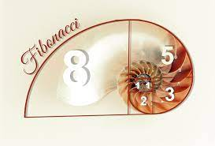
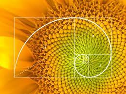
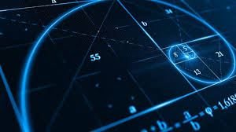

Introducción
Los números de Fibonacci son una secuencia infinita de números en la que cada número es la suma de los dos anteriores. Esta secuencia comienza suma de los anteriores. Esta secuencia comienza con 0 y 1, y a partir de ahí, cada número es la suma de los dos números anteriores:
0, 1, 1, 2, 3, 5, 8, 13, 21, 34, ...
Imagen
  Definición
Los números de Fibonacci se definen de la siguiente manera:
F(0) = 0
F(1) = 1
F(n) = F(n-1) + F(n-2) para n ≥ 2
Ejemplos
Algunos ejemplos de números de Fibonacci son:
- F(0) = 0
- F(1) = 1
- F(2) = F(1) + F(0) = 1 + 0 = 1
- F(3) = F(2) + F(1) = 1 + 1 = 2
- F(4) = F(3) + F(2) = 2 + 1 = 3
- F(5) = F(4) + F(3) = 3 + 2 = 5
Puedes continuar la secuencia de Fibonacci indefinidamente sumando los dos números anteriores para obtener el siguiente número en la secuencia.
Aplicaciones
Los números de Fibonacci tienen aplicaciones en varios campos, como matemáticas, ciencias de la computación, biología y más. Algunos ejemplos de su aplicación incluyen:
- Modelado de crecimiento de poblaciones de animales y plantas.
- Algoritmos de optimización y búsqueda.
- Análisis de mercados financieros.
- Arte y diseño.
Curiosidades
Los números de Fibonacci también aparecen en la naturaleza en formas sorprendentes. Por ejemplo, en las espirales de las piñas, el arreglo de pétalos en flores y la forma en que se ramifican los árboles.
Explora más sobre los números de Fibonacci y descubre las fascinantes propiedades y relaciones matemáticas que tienen.